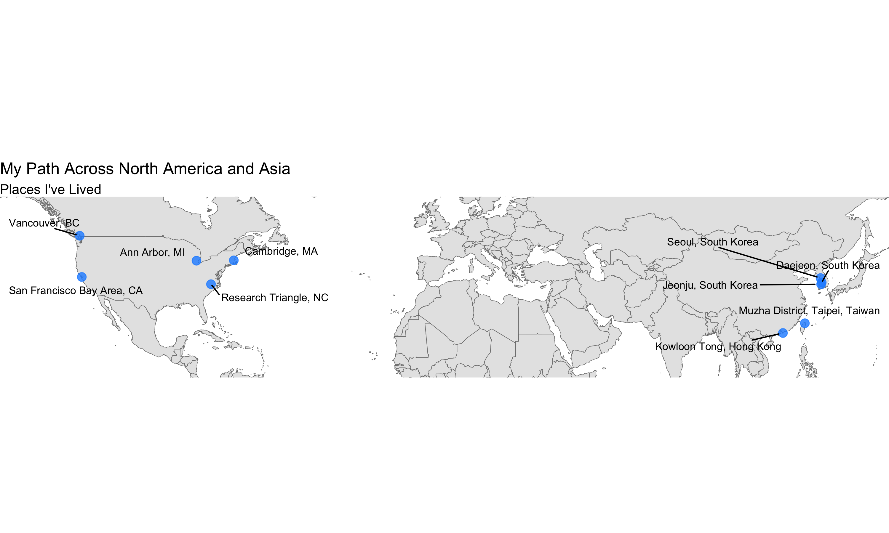

So far, I’ve lived in more than ten cities across five countries on two continents. I was born and raised in South Korea (Jeonju, Daejeon, Seoul, Changwon, and Dongducheon) and have also lived in Hong Kong (Kowloon Tong), Taiwan (Muzha District, Taipei City), Canada (Vancouver), and across the United States, including the San Francisco Bay Area (CA), Ann Arbor (MI), Cambridge (MA), and the Research Triangle (NC). My path has been non-linear, spanning academia, industry, public service, and civic technology. These experiences have shaped my identity as a bridge builder and translator—someone who works across boundaries of scholarship and practice, discipline and sector, and place and community.
At the same time, my perspective and career path have been shaped by where I began. I’m a first-generation college student from a working-class family.
These experiences continue to guide the research questions I pursue and the problems I choose to engage with.
Below is a collection of essays I’ve written over the years, organized into three categories: professional reflections, personal reflections, and career advice. You can also find my writing on Substack.
Professional Reflections
I Didn’t Think I’d Return to Academia — Until I Saw What Was Missing
Researching and Doing Policy Science as a Political Scientist
Personal Reflections
Career Advice
Academic Job Talks as Storytelling: Why Character Matters as Much as Plot
How to Write a Statement of Purpose for Graduate School in Political Science / Public Policy
Korean essays
Here are some resources that have shaped my thinking on how social sciences can critically and directly inform, as well as improve, policy practice (listed alphabetically):
Adam Seth Levine. 2024. Collaborate Now!. Cambridge University Press.
Aaron Wildavsky. 1985. The Once and Future School of Public Policy. The Public Interest
Alexander Hertel-Fernandez. 2025. How Social Scientists Could Help to Rebuild the Federal Government: Lessons from My Time in the Biden Administration. September 18. Substack: Can We Still Govern?
Alexander Hertel-Fernandez. 2025. How Political Science Shaped Federal Policy in the Biden-Harris Administration: Learning from Efforts to Democratize the Administrative State. Perspectives on Politics.
Cyrus Samii. 2023. Methodologies for “Political Science as Problem Solving.” New York University. Forthcoming in The Oxford Handbook of Methodological Pluralism, edited by Janet Box-Steffensmeier, Valeria Sinclair-Chapman, and Dino Christenson. Oxford University Press.
Donald E. Stokes. 1997. Pasteur’s Quadrant: Basic Science and Technological Innovation. Brookings Institution Press.
Donald P. Moynihan. 2022. How Can Scholars Help to Embed Institutions of Public-Sector Change? (Or Things I Wish I’d Known When I Was a Grad Student). APPAM Presidential Address. Perspectives on Public Management and Governance 5(4): 276–287.
Duncan J. Watts. 2017. Should Social Science Be More Solution-oriented? Nature Human Behaviour 1, Article 0015
Esther Duflo. 2017. The Economist as Plumber. AEA Distinguished Lecture. American Economic Review: Papers & Proceedings 107(5): 1–26.
Herbert Simon. 1996. Models of My Life. The MIT Press.
Jeremy Adelman. 2013. Worldly Philosopher: The Odyssey of Albert O. Hirschman. Princeton University Press.
Marshall Ganz. 2024. People, Power, Change: Organizing for Democratic Renewal. Oxford University Press.
Michael Burawoy. 2005. For Public Sociology. American Sociological Review 70(1): 4–28.
Michael Burawoy. 2021. Public Sociology. Polity.
Peter Levine. 2022. What Should We Do?: A Theory of Civic Life. Oxford University Press.
Sarah Williams. 2022. Data Action: Using Data for Public Good. MIT Press.
Susan Athey. 2025. The Economist as Designer in the Innovation Process for Socially Impactful Digital Products. AEA Presidential Address. American Economic Review 115(4): 1059–1099.
Tracy Kidder. 2000. Mountains Beyond Mountains: The Quest of Dr. Paul Farmer, a Man Who Would Cure the World. Random House.